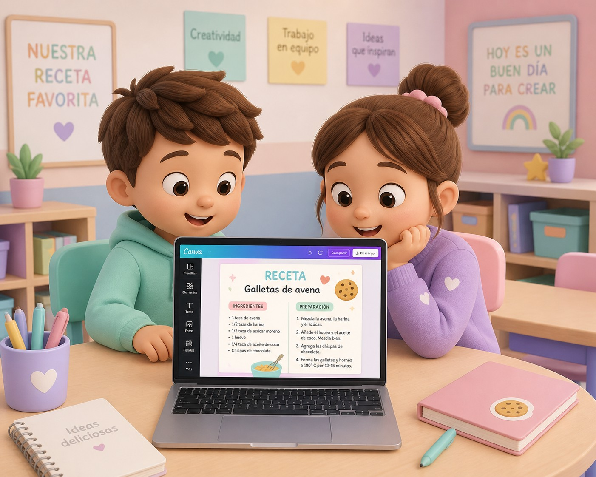
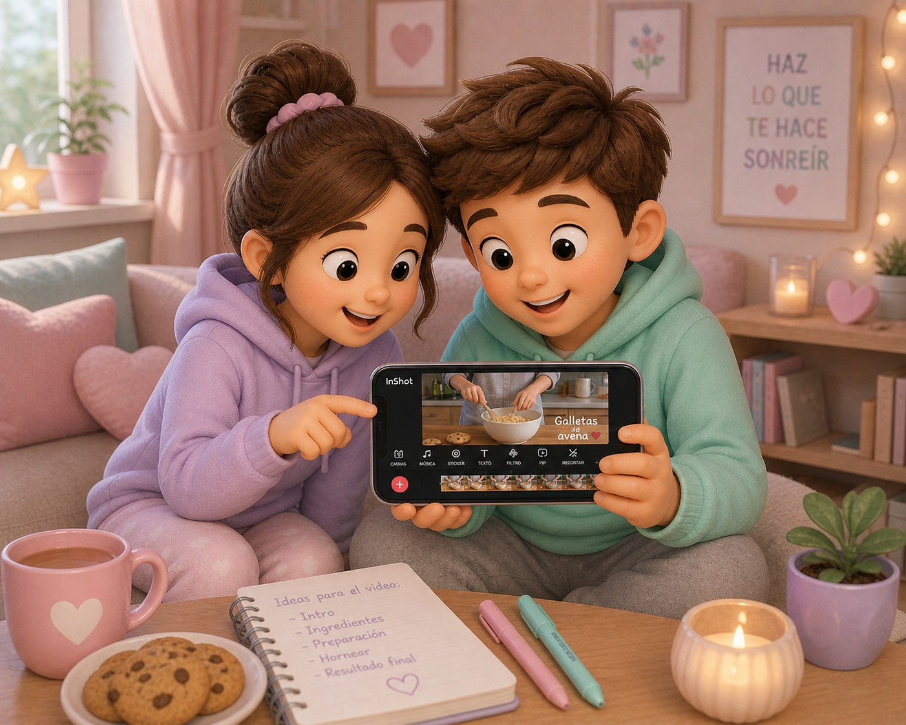

Para el desarrollo del producto final se propone el uso de dos herramientas digitales: Canva e Inshot.
De este modo, ambas herramientas se complementan eficazmente: Canva permite elaborar la receta por escrito de forma clara, visual y organizada, asegurando la calidad y presentación de los contenidos, mientras que InShot facilita la creación de un vídeo dinámico que recoge el proceso de elaboración, aportando un componente práctico e interactivo. En conjunto, favorecen una experiencia de aprendizaje más completa, estructurada y atractiva tanto para el alumnado como para el docente.
La combinación de Canva e Inshot permite un aprendizaje significativo y adaptado para Cuarto de Primaria.
Además, esta combinación fomenta la creatividad del alumnado, ya que pueden improvisar en el diseño de la receta : primero redactándola en Canva y, después, representándola en formato audiovisual con InShot. Para el profesorado, supone una forma eficaz y divertida de organizar y evaluar el trabajo, garantizando que los materiales estén bien presentados y sean accesibles.
Canva ofrece una plantilla ya preparada con posibilidad de crear una propia con un diseño propio y atractivo sin conocimientos técnicos, lo que facilita que el alumnado se centre en el contenido sin empezar desde cero; siendo su uso muy intuitivo con gran variedad de recursos visuales. Canva destaca porque combina facilidad de uso, recursos visuales y resultados atractivos, algo que no suelen ofrecer otras herramientas de forma tan completa.
Mientras Inshot permite grabar, editar de forma rápida e intuitiva incluyendo música, texto, efectos y transiciones en un solo lugar, evitando usar varias apps. InShot destaca porque es rápido, accesible y pensado para crear contenido audiovisual completo desde el móvil.
Tanto Canva como Inshot garantizan un enfoque equilibrado que combina creatividad, interacción y evaluación eficaz, adaptándose a las características y necesidades del alumno, y fomentando su participación.
 |
 |
Imágenes creadas por la autora con DALL-E 3